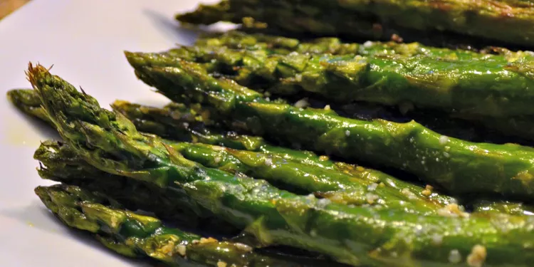

Oven-Roasted Asparagus

Description
Roasted asparagus seasoned with garlic, lemon, and Parmesan cheese. This
recipe is super quick to prep and roasting removes any bitterness. Try it
next to lamb or grilled fish.
Ingredients
- 1 bunch thin asparagus spears, trimmed
- 3 tablespoons olive oil
- 1.5 tablespoons grated Parmesan cheese (Optional)
- 1 clove garlic, minced (Optional)
- 1 teaspoon sea salt
- 0.5 teaspoon ground black pepper
- 1 tablespoon lemon juice (Optional)
Steps
- Preheat the oven to 425 degrees F
- Place asparagus into a mixing bowl; drizle with olive olive
oil and toss to coat. Sprinkle with Parmesan cheese, garlic,
salt, and peppter. Arrange asparagus in a single layer in a
baking dish.
- Bake in the preheated oven until just tender, 12 to 15 minuts
depending on thickness. Sprinkle with lemon juice just before
serving.